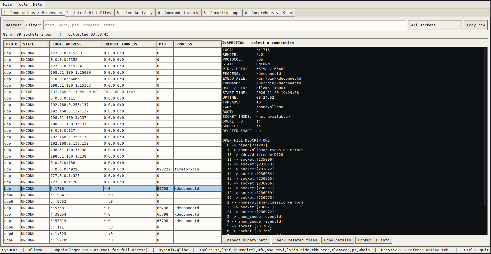

Native GTK 3 · Linux · For NT Protection
Know what your system is doing.
EyeOFmX is a native Linux desktop inspector. It shows active sockets, their owning processes, important system files and a short security posture report. Collectors are read-only; installing optional scanners is always a separate, confirmed action.
Source on GitHub →
interface preview

Downloads
Match the architecture to uname -m.
VERIFY.sh
Loading checksums…